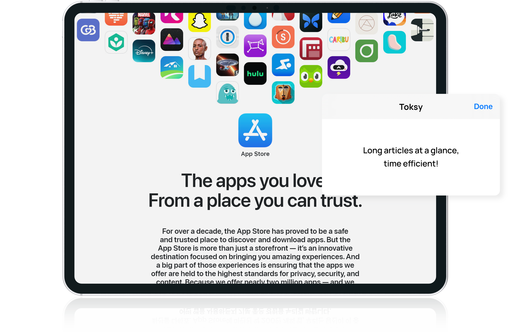
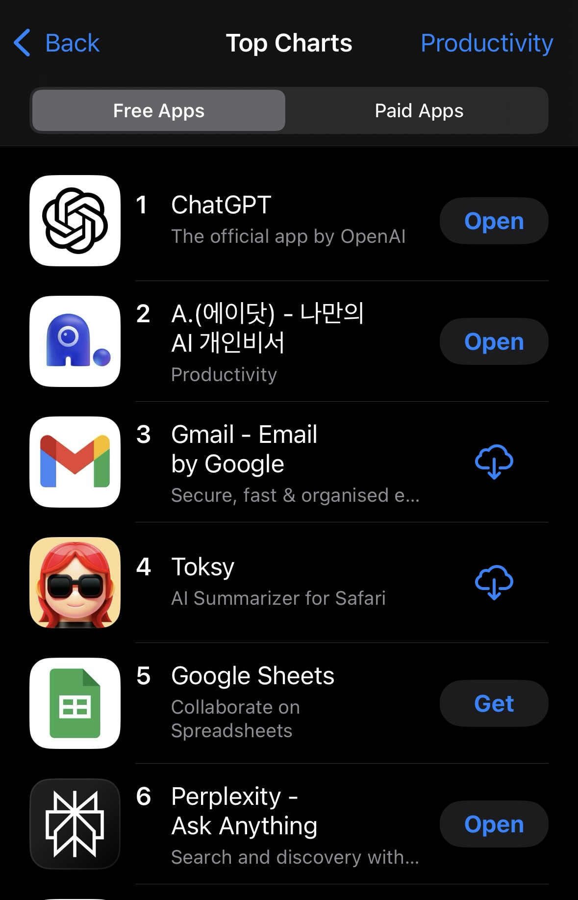
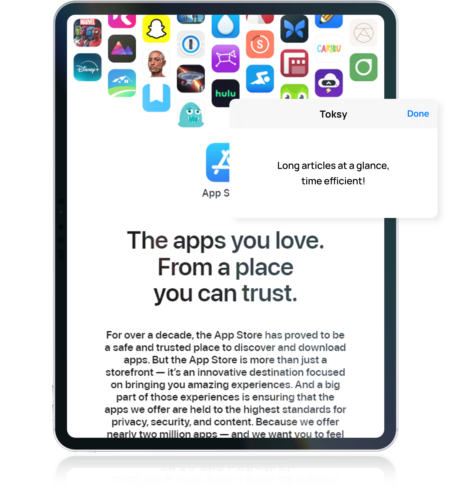
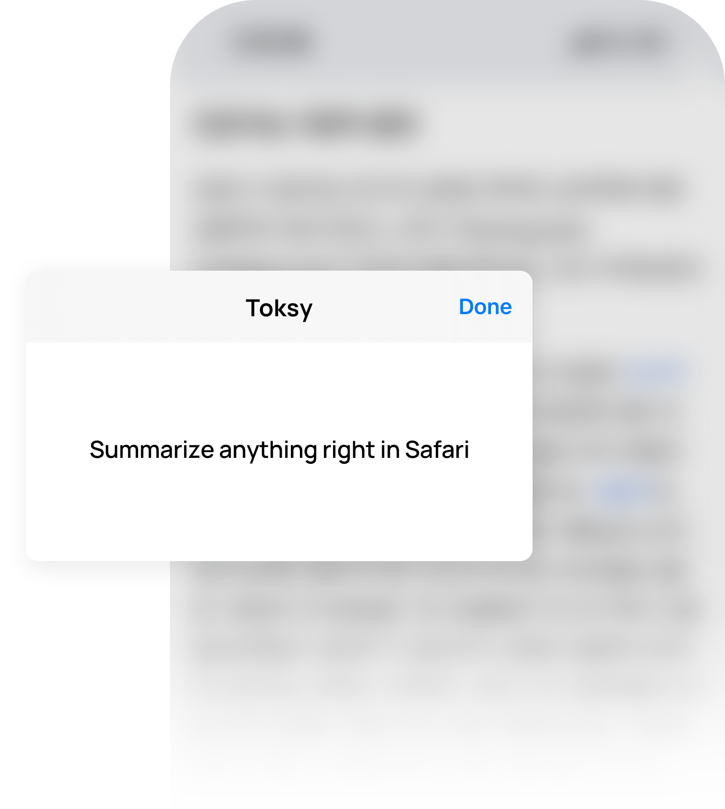
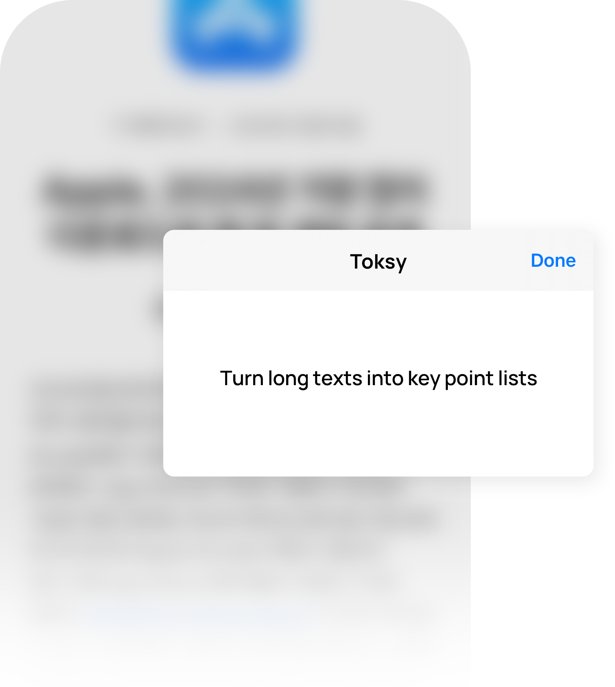
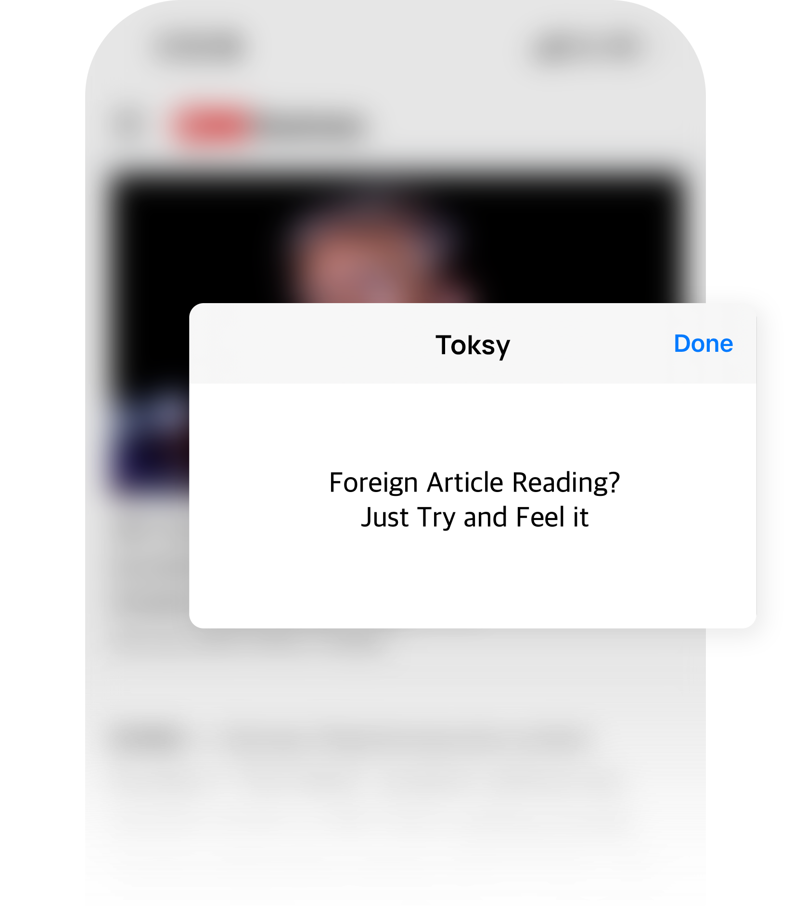
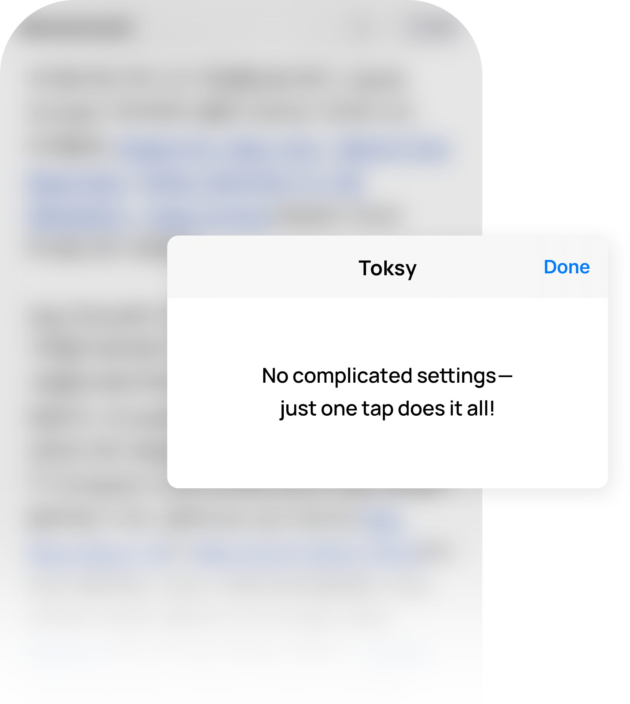
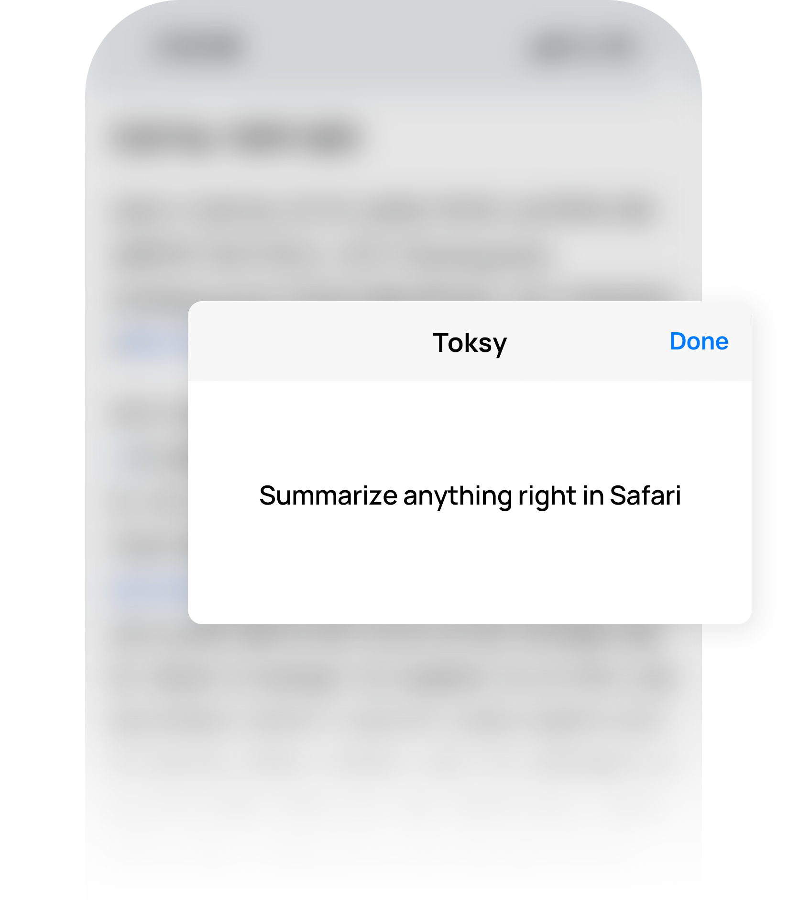
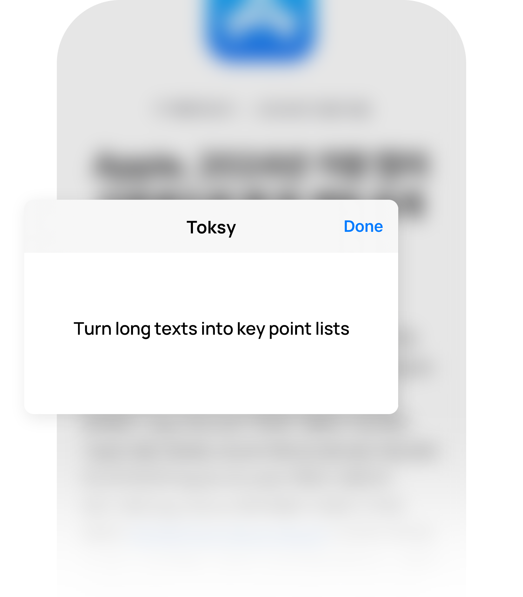
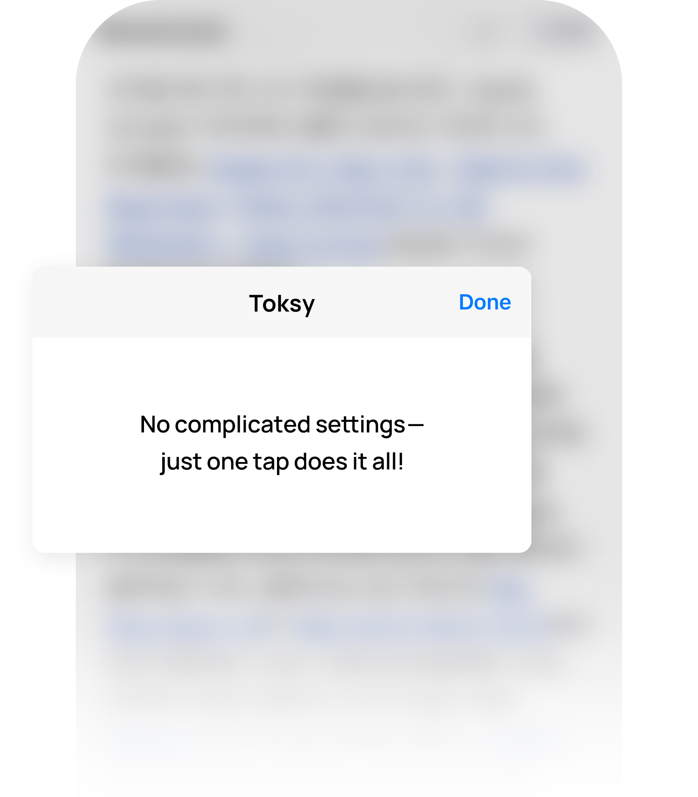

It's a miracle!
Toksy has received an enthusiastic response, achieving the incredible milestone of ranking 4th in the Productivity category on the South Korean AppStore.
Everybody loves Toksy!

Whether it's a long news article, a work report, emails, or even comments.
Using the most advanced AI, Toksy breaks down complexity and delivers concise, clear summaries.
Quickly find the important details with Toksy and stay on top of what matters most.

Toksy delivers everything in clean, concise lists.
By highlighting only the key points, Toksy reduces fluff and boosts readability.
Perfect for busy schedules or when you just need quick insights.




Feeling stuck in learning language journey?
Toksy's summaries boost your confidence instantly.
Understand the essence, dive into the original,
and feel your language skill soar!



No need to worry if you're not a rocket scientist.
Its simple, no-fuss interface requires no complex settings,
making it easy for anyone to use.